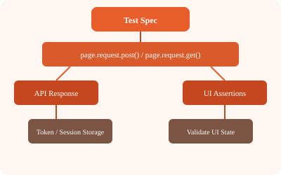

Playwright provides a built-in APIRequestContext for making HTTP requests. This lets you combine API and UI tests seamlessly.
import { test, expect } from '@playwright/test';
test('GET request', async ({ request }) => {
const response = await request.get('https://api.example.com/users');
expect(response.status()).toBe(200);
const body = await response.json();
expect(body.length).toBeGreaterThan(0);
});
test('POST request', async ({ request }) => {
const newUser = await request.post('https://api.example.com/users', {
data: { name: 'John', email: 'john@example.com' }
});
expect(newUser.status()).toBe(201);
});
test('PUT and DELETE', async ({ request }) => {
await request.put('https://api.example.com/users/1', {
data: { name: 'Updated' }
});
await request.delete('https://api.example.com/users/1');
});test('authenticated API call', async ({ request }) => {
// Get token
const auth = await request.post('https://api.example.com/auth/login', {
data: { username: 'admin', password: 'password' }
});
const { token } = await auth.json();
// Use token
const response = await request.get('https://api.example.com/protected', {
headers: { Authorization: `Bearer ${token}` }
});
expect(response.status()).toBe(200);
});// utils/api.ts
import { APIRequestContext } from '@playwright/test';
export async function createUser(request: APIRequestContext, data: any) {
const response = await request.post('/api/users', { data });
return response.json();
}
export async function getToken(request: APIRequestContext) {
const res = await request.post('/api/auth/login', {
data: { username: 'admin', password: 'password' }
});
return (await res.json()).token;
}